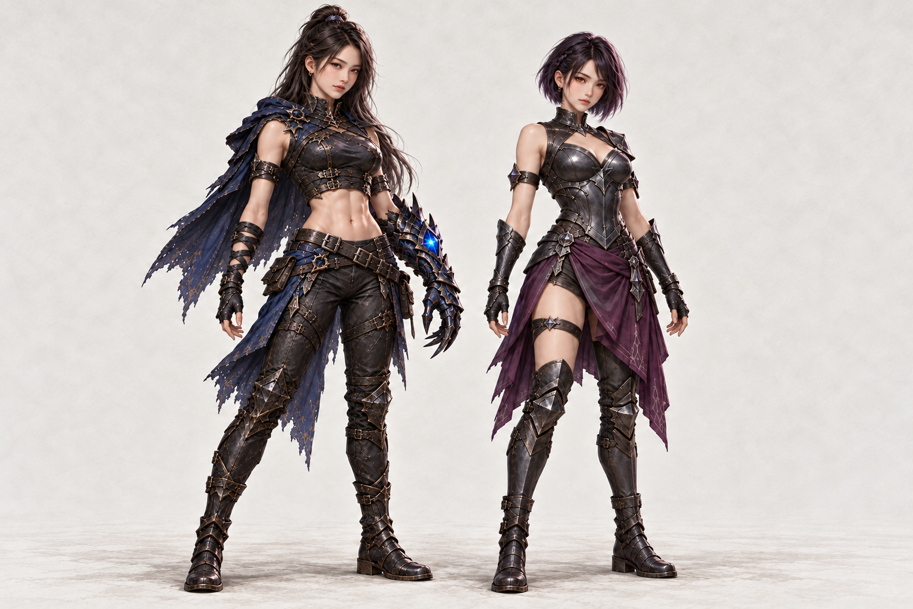
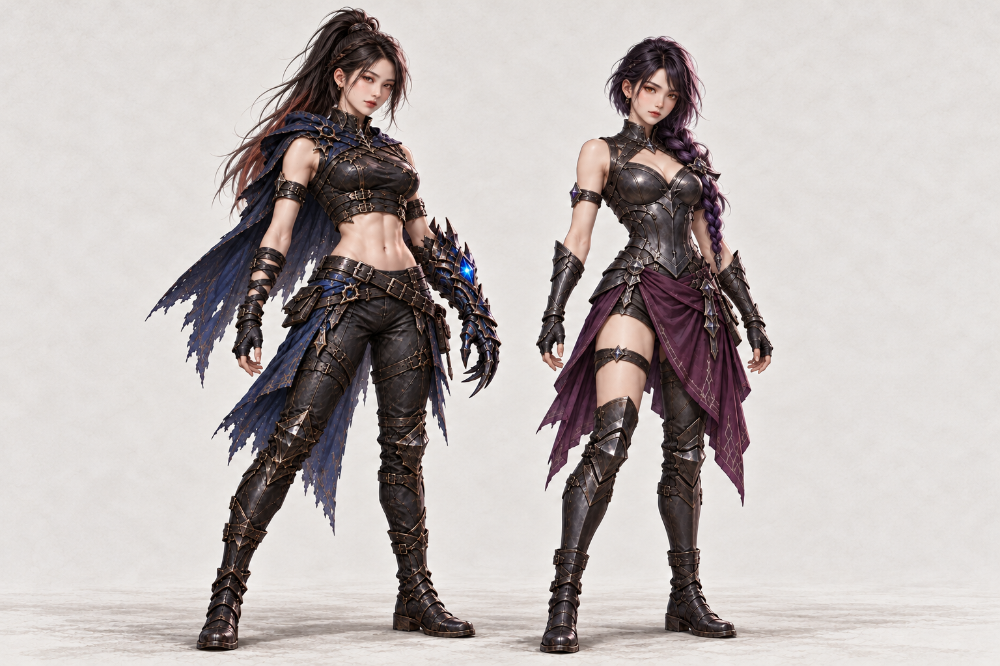
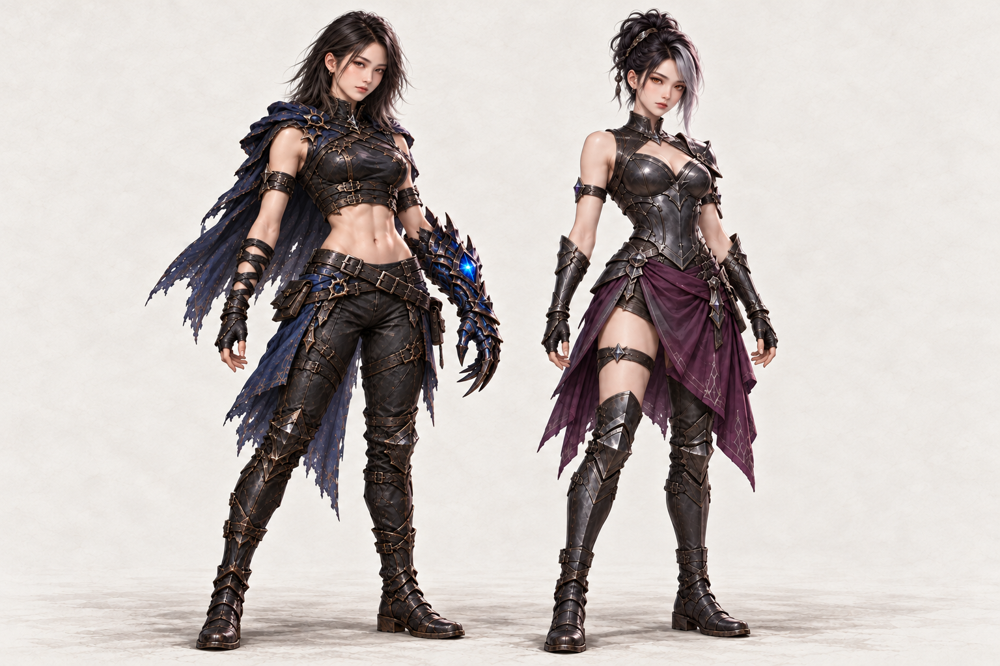

01 · 하프업 / 비대칭 단발
흑갈색 하프업과 짙은 자주 단발. 왼쪽 복근형 · 오른쪽 창법사
원본 1535 × 1024 열기 ↗
각 캐릭터 3종, 총 6개 헤어 시안. 왼쪽은 복근·긴 바지·청색 단일 코어 장갑, 오른쪽은 복부 갑주·가슴선·한쪽 허벅지로 구분했습니다.
흑갈색 하프업과 짙은 자주 단발. 왼쪽 복근형 · 오른쪽 창법사
원본 1535 × 1024 열기 ↗
흑갈색 높은 포니테일과 보랏빛 굵은 옆땋기. 왼쪽 복근형 · 오른쪽 창법사
원본 1536 × 1024 열기 ↗
어깨 길이 레이어드컷과 회은색 앞머리가 섞인 올림머리. 왼쪽 복근형 · 오른쪽 창법사
원본 1536 × 1024 열기 ↗